Ce qu’il faut faire à chaque service, écran par écran,
pour quelqu’un qui n’a jamais utilisé l’application.
Version du 18 novembre 2026. Les images sont des exemples : les heures, les chiffres et certaines lignes sont fictifs. Sur votre iPad, vous verrez vos vrais équipements, produits et checklists.
Trois choses à retenir avant de commencer
L’application s’ouvre dans Safari, puis on la pose sur l’écran d’accueil de l’iPad comme une vraie app. C’est indispensable : sinon Safari peut effacer des saisies pas encore envoyées.
Tant que ce n’est pas fait, un bandeau en haut de l’écran le rappelle. Le bouton Comment faire ? montre ces mêmes étapes.
Attention : l’icône et Safari comptent comme deux appareils différents. Utilisez toujours la même (l’icône).
La toute première ouverture sur un nouvel appareil demande Internet et le mot de passe du compte gérant (email + mot de passe). Ensuite, plus jamais.
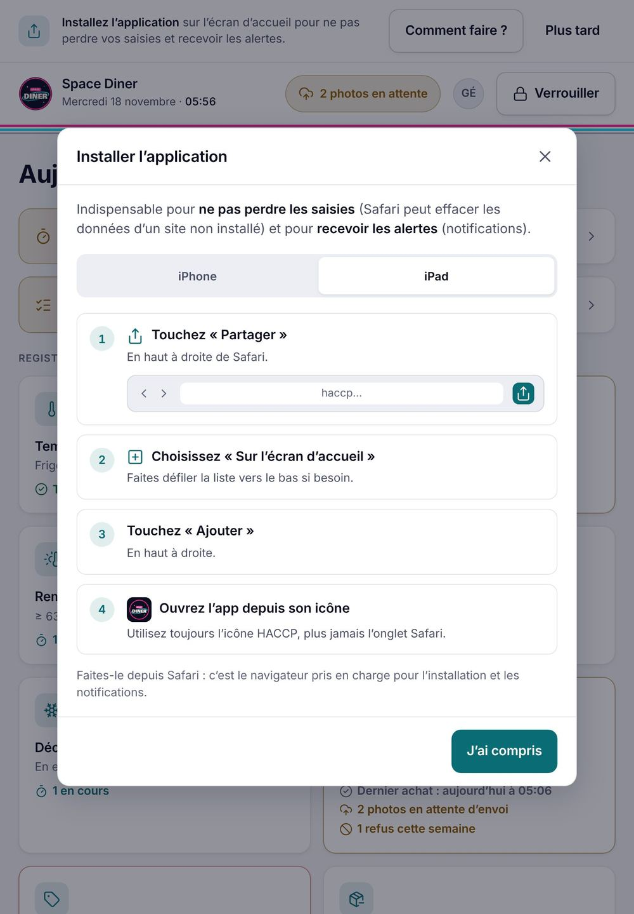
Chaque saisie est signée avec le nom de la personne connectée. Si quelqu’un d’autre prend l’iPad, il doit d’abord toucher Verrouiller (en haut à droite), puis choisir son nom.
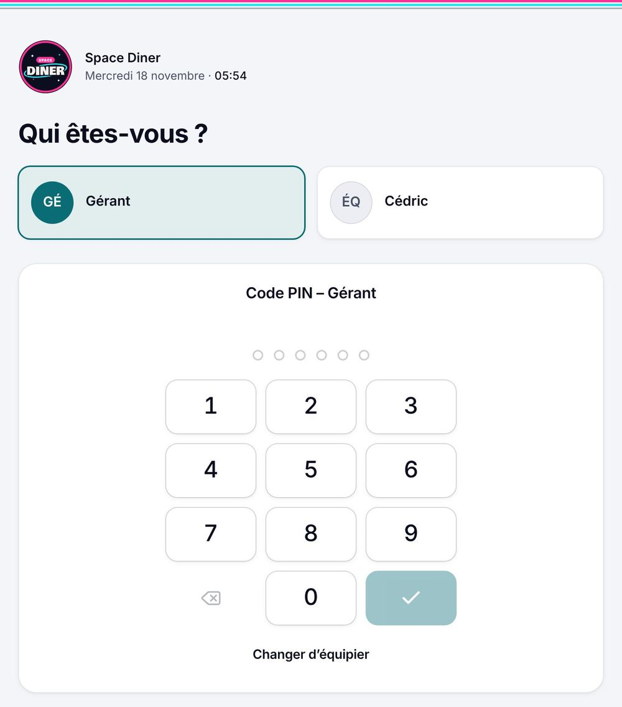
Si un bandeau « Nouvelle version disponible » apparaît, touchez Mettre à jour. L’application redémarre en quelques secondes ; rien n’est perdu.
C’est l’écran principal. Il vous dit ce qu’il reste à faire. Revenez-y avec ‹ Accueil en haut à gauche de chaque écran.
Juste sous « Aujourd’hui » : les checklists à faire, un produit en train d’être réchauffé avec le temps qui reste… Touchez un rappel pour y aller directement.
Une tuile par sujet. Sous chaque titre, une ligne dit où vous en êtes :
En bas, les Outils : Gestion (gérant), Tableau des allergènes, Test d’enregistrement.
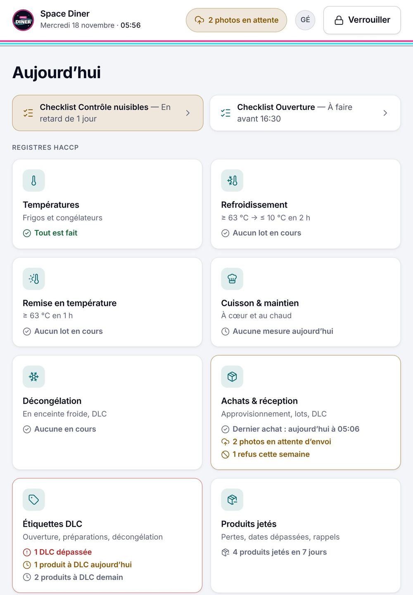
Voici l’ordre conseillé (prépa 16 h – 18 h 30, service 18 h 30 – 21 h). Chaque ligne renvoie au chapitre qui l’explique.
| Quand | Quoi | Où dans l’app | |
|---|---|---|---|
| ☐ | Le jour des courses | Enregistrer les achats au retour au camion, avec la photo des étiquettes | Achats & réception (ch. 7) |
| ☐ | 16 h 30 | Relever les 3 températures : frigo inox 350 L, desserte réfrigérée 226 L, congélateur 120 L | Températures (ch. 5) |
| ☐ | Prépa | Étiqueter chaque produit ouvert et chaque préparation maison (sauces, crème pâtissière, pain décongelé) | Étiquettes DLC (ch. 8) |
| ☐ | Prépa | Jeter ce qui a dépassé sa DLC (bouton « Jeté ») | Étiquettes DLC (ch. 8 et 13) |
| ☐ | Prépa | Réchauffer la viande (porc, poulet) et noter la température atteinte | Remise en température (ch. 9) |
| ☐ | Avant le service | Contrôler l’huile des friteuses | Huiles de friture (ch. 10) |
| ☐ | Avant le service | Faire la checklist Ouverture | Nettoyage › Checklists (ch. 11) |
| ☐ | Pendant le service | Mesurer à cœur les nuggets ; contrôler le bain-marie (≥ 63 °C) | Cuisson & maintien (ch. 9) |
| ☐ | 21 h | Relever de nouveau les 3 températures | Températures (ch. 5) |
| ☐ | Après le service | Cocher le nettoyage fait (plancha, friteuses, machine à sceller, plan de travail, sonde, vaisselle) | Nettoyage (ch. 12) |
| ☐ | Après le service | Faire la checklist Fermeture | Nettoyage › Checklists (ch. 11) |
| ☐ | Avant de partir | Vérifier que la pastille dit « Tout est synchronisé » (sinon, ce sera envoyé plus tard) | En haut de l’écran (ch. 15) |
Une fois par semaine : la checklist Contrôle nuisibles et le nettoyage Frigos et desserte. L’écran « Aujourd’hui » vous le rappelle en orange quand c’est le moment.
Astuce : pas besoin de retenir cette liste. Faites ce que l’écran « Aujourd’hui » montre en orange ou en rouge, jusqu’à ce que tout soit vert.
Deux fois par jour de service, à 16 h 30 et à 21 h, on note la température affichée par chaque enceinte froide.
| Enceinte | Bon si… |
|---|---|
| Frigo inox 350 L (viande) | 3 °C ou moins |
| Desserte réfrigérée 226 L | 4 °C ou moins |
| Congélateur inox 120 L | −18 °C ou plus froid |
Avant même d’enregistrer, l’écran affiche « Conforme » (vert) ou « Hors seuil » (rouge).
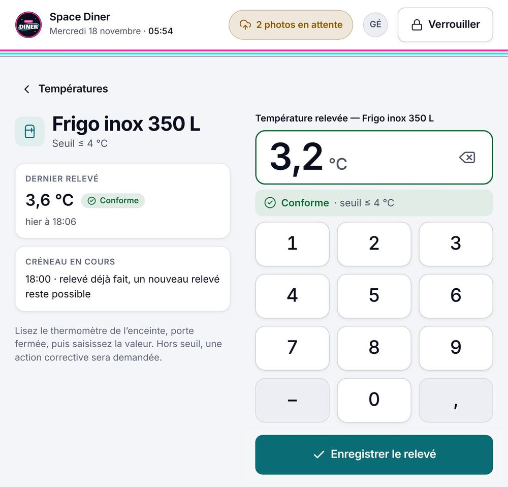
Si une valeur est hors seuil (trop chaud au frigo, pas assez chaud au bain-marie, cuisson insuffisante…), l’application ouvre tout de suite l’écran « Action corrective obligatoire ». Il faut dire ce que vous avez fait.
Tant qu’aucune action n’est enregistrée, l’écran « Aujourd’hui » affiche en rouge « Action corrective manquante ». Un inspecteur le verrait aussi.
Bon réflexe : après avoir réglé le problème, refaites un relevé quelques minutes plus tard. Un nouveau relevé est toujours possible.
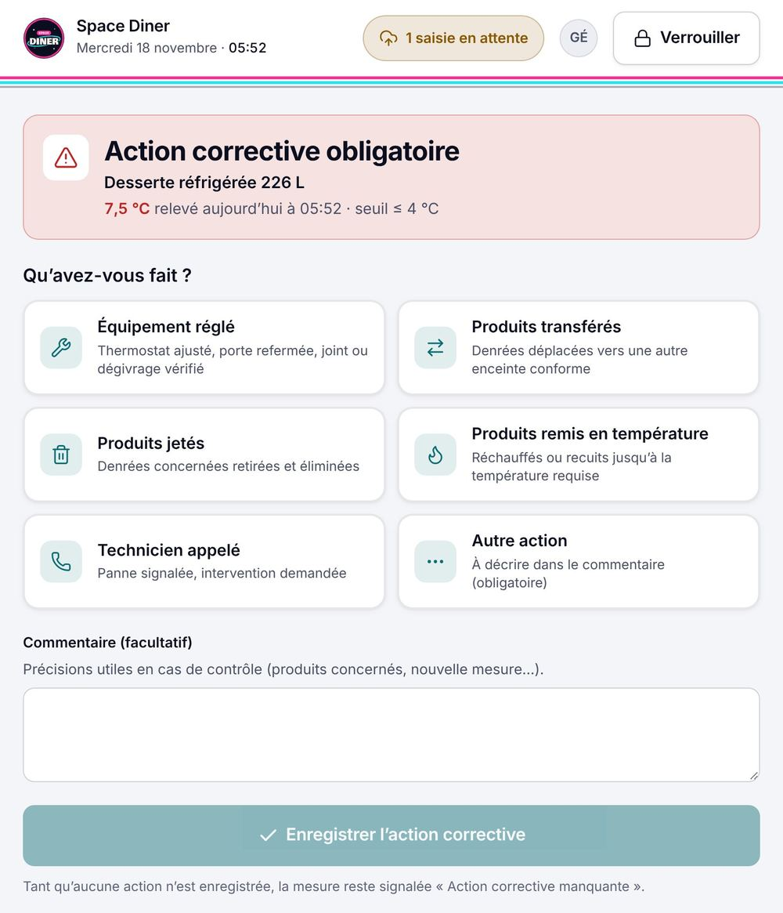
À faire au retour des courses, en rangeant. Cela sert à prouver que la marchandise est arrivée en bon état et à retrouver un lot en cas de rappel.
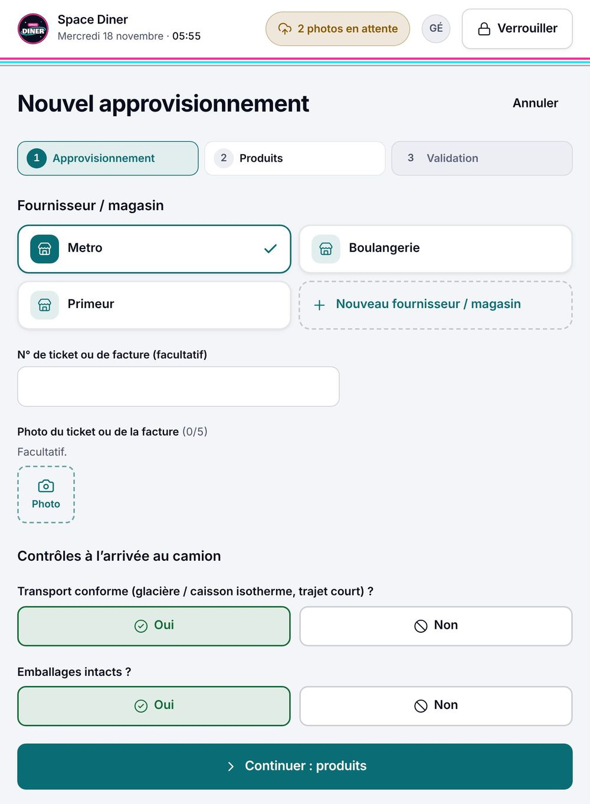
La lecture automatique fonctionne sur l’iPad, sans Internet. La toute première fois, l’iPad doit être connecté pour télécharger le « moteur de lecture » (une seule fois). Si le message « pas encore prêt » apparaît, saisissez à la main cette fois-ci.
Vous pouvez aussi toucher Scanner le code-barres : un produit déjà acheté est alors reconnu tout seul.
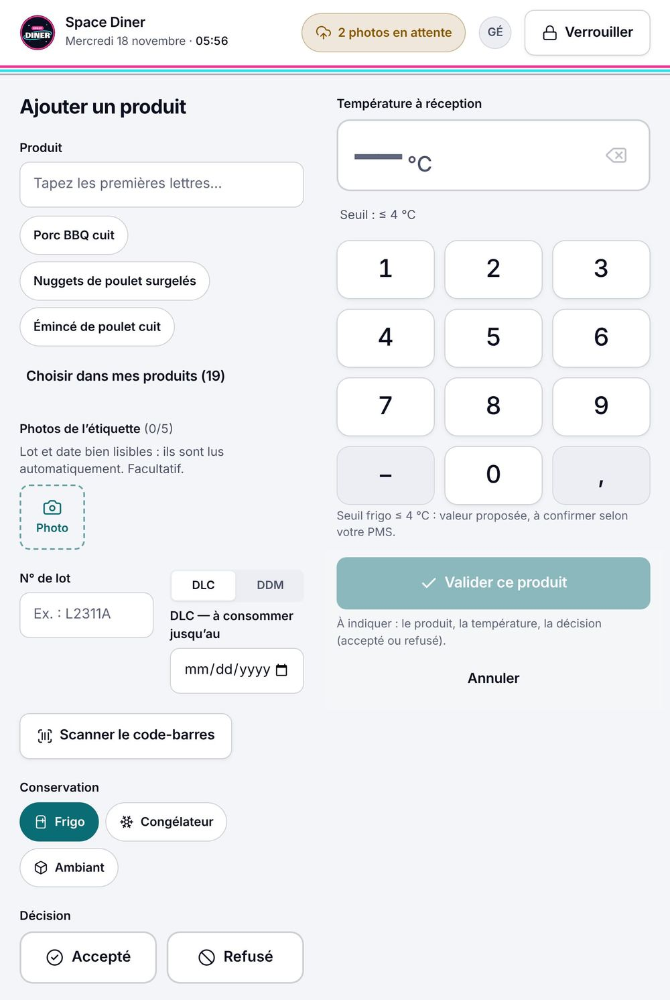
Produit accepté trop chaud ? L’application propose « Refuser ce produit » ou « Accepter avec action corrective ». En cas de doute, ne gardez pas le produit.
Tout ce qui est ouvert, préparé ou décongelé doit porter une étiquette avec sa date limite. L’application calcule la date et imprime sur la Brother (rouleau 62 mm).
Si l’impression par la fenêtre de l’iPad ne marche pas, essayez Impression directe.
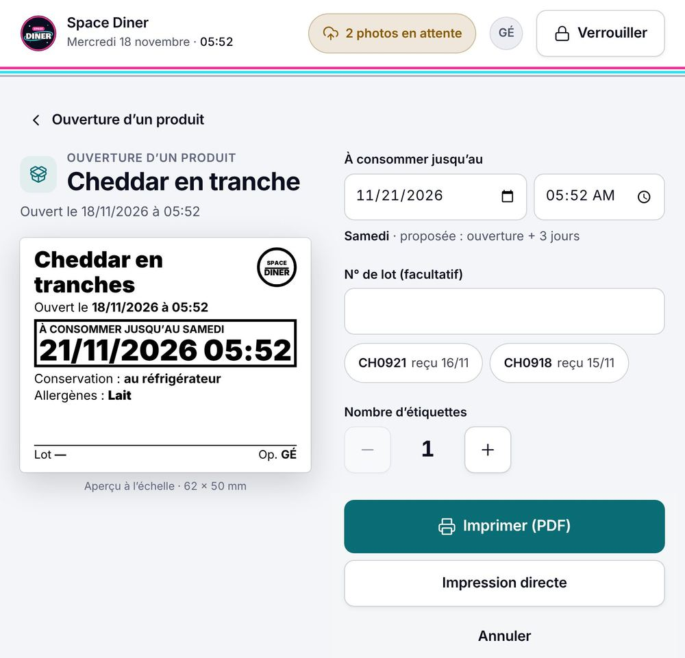
| Produit | Durée | À savoir |
|---|---|---|
| Sauces maison froides (Sauce UFO, Ranch, sauce piquante fumée) | 3 jours au froid (0 à 4 °C) | Faites le jeudi, jetées au plus tard le samedi soir. Les flacons restés en saladette froide sont jetés à la DLC du bac. |
| Pommes cuites à la cannelle | 3 jours | Au froid. |
| Miel piquant | 1 mois | Pot fermé, à température ambiante. |
| Crème pâtissière à l’amande | 48 h | Au froid. Jetée si plus de 48 h (vérifié à la checklist Fermeture). |
| Pain brioché | 4 jours après l’achat | Le reste peut être congelé (1 mois). Après décongélation : 24 h (étiquette « Décongélation »). |
| Chutney et bacon | — | Gardés séparés, posés directement dans le Croq’Brioche. Le pot de chutney suit la durée de son étiquette. |
| Produits achetés ouverts | Selon la fiche | Si « Selon l’étiquette du fabricant », tapez la date de l’étiquette du produit. |
L’écran Étiquettes DLC liste les produits dont la DLC est dépassée (rouge), aujourd’hui ou demain. Pour chacun :
Un produit à DLC dépassée ne doit jamais être servi : retirez-le et touchez Jeté.
Le bouton Tableau des allergènes imprime le tableau A4 à afficher pour les clients.
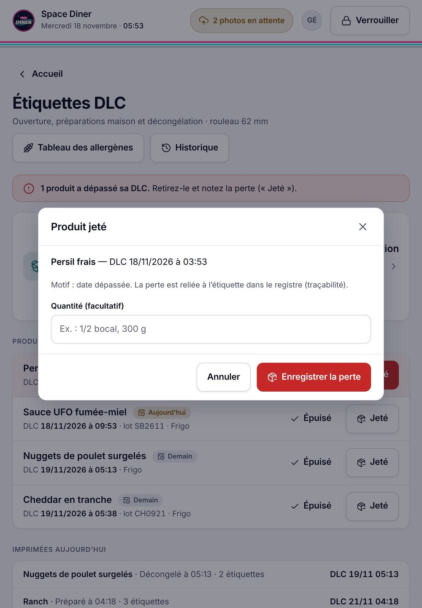
Les températures à atteindre à cœur : porc 63 °C minimum ; poulet et nuggets 74 °C minimum. Bain-marie : 63 °C minimum, 3 h maximum, puis ce qui reste est jeté (jamais remis au frigo).
Pour le porc BBQ cuit ou l’émincé de poulet cuit sortis du frigo. Il faut atteindre la bonne température en 1 h maximum.
L’objectif s’adapte au produit : 63 °C pour le porc, 74 °C pour le poulet. Pas atteint ou trop tard ? → action corrective (chapitre 6).
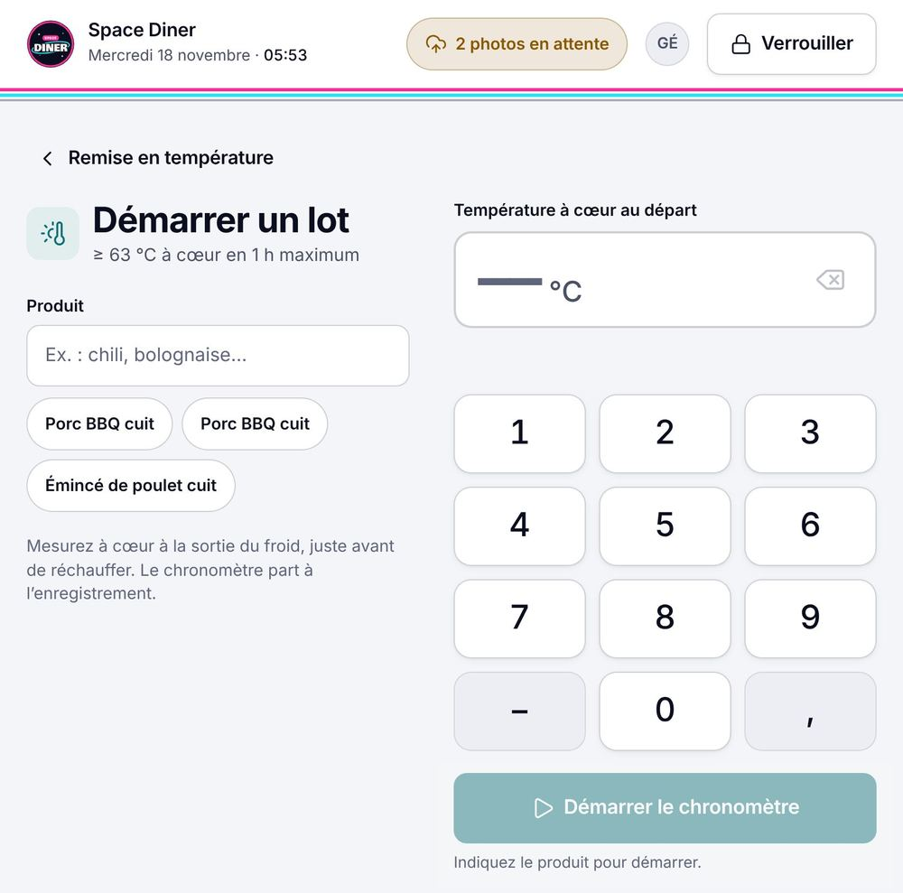
Deux boutons Nouvelle mesure :
Pensez à nettoyer la sonde avec une lingette après chaque mesure.
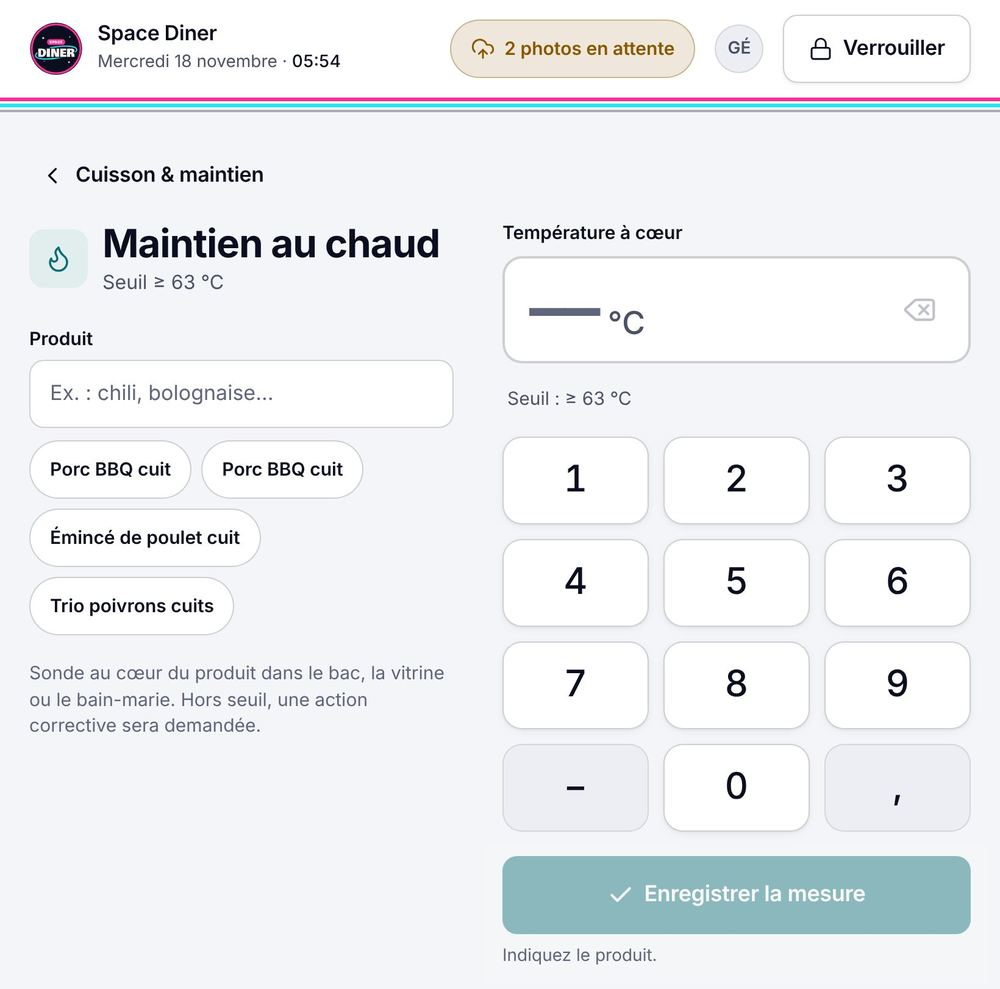
Un panneau par friteuse : Friteuse (frites) et Friteuse d’appoint (nuggets). On mesure les « composés polaires » avec le testeur ou une bandelette.
| Valeur | Ce qu’il faut faire |
|---|---|
| Moins de 22 % | Conforme, rien à faire. |
| 22 à 25 % | « À surveiller » : prévoir le changement bientôt. |
| Plus de 25 % | Interdit : l’application demande de changer l’huile (ou une autre action corrective). |
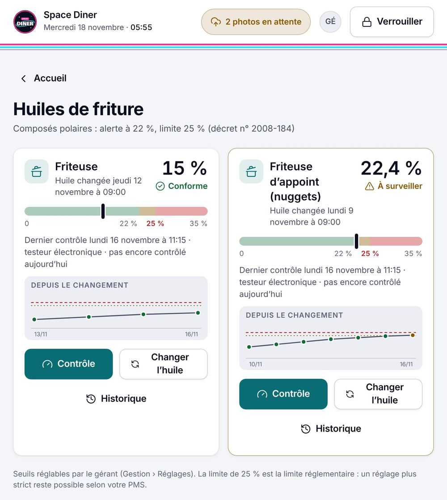
La checklist Ouverture se fait pendant la prépa, avant le service. La checklist Fermeture apparaît après le relevé de 21 h.
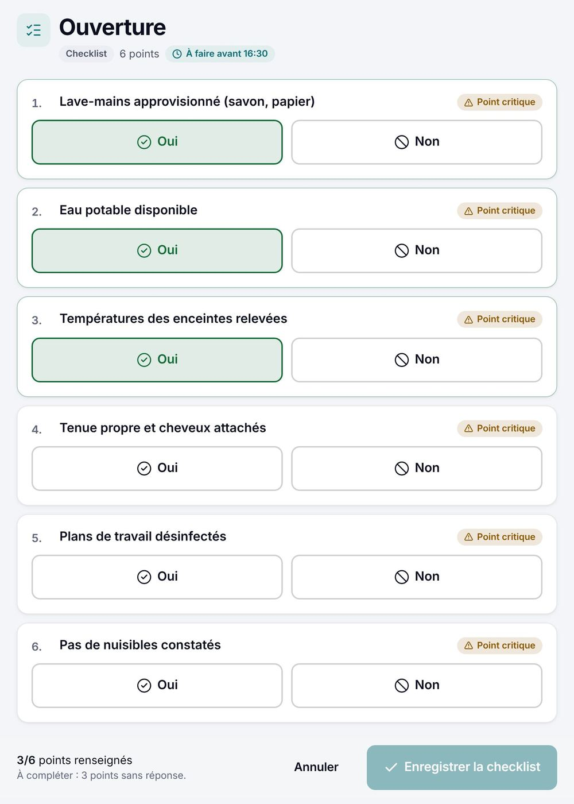
Le samedi, si vous n’avez plus de sauce froide, répondez simplement Oui au point « Samedi » (il n’est pas obligatoire). La checklist Contrôle nuisibles se fait une fois par semaine, de la même façon.
La tuile Nettoyage montre « À faire maintenant » (le plus urgent en premier), puis « À jour », puis les Checklists.
| Quand | Tâches |
|---|---|
| Après chaque service | Plancha · Friteuses · Machine à sceller · Plan de travail · Sonde du thermomètre · Vaisselle sale |
| Chaque jour | Lave-mains · Poubelles et sols |
| Chaque semaine | Frigos et desserte |
En retard : orange (1 service oublié) puis rouge (plusieurs).
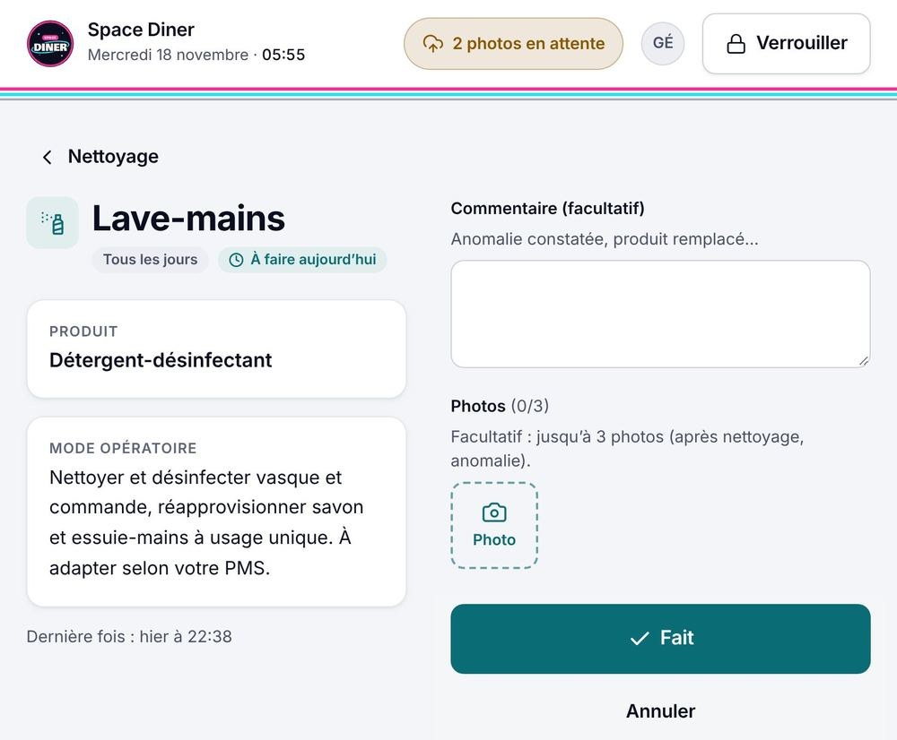
Chaque produit jeté pour une raison d’hygiène se note : date dépassée, trop chaud, abîmé, rappel…
Plus rapide : depuis Étiquettes DLC, le bouton Jeté d’un produit à échéance fait la même chose en un geste (chapitre 8).
Les restes du bain-marie jetés chaque soir sont déjà couverts par la checklist Fermeture : inutile de les déclarer un par un.
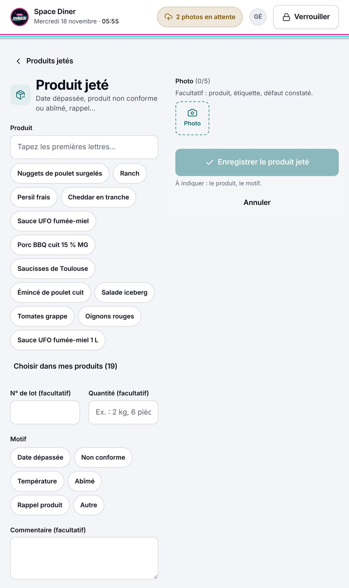
L’ancienne valeur reste visible, barrée, avec le motif. C’est voulu : un registre HACCP ne s’efface pas.
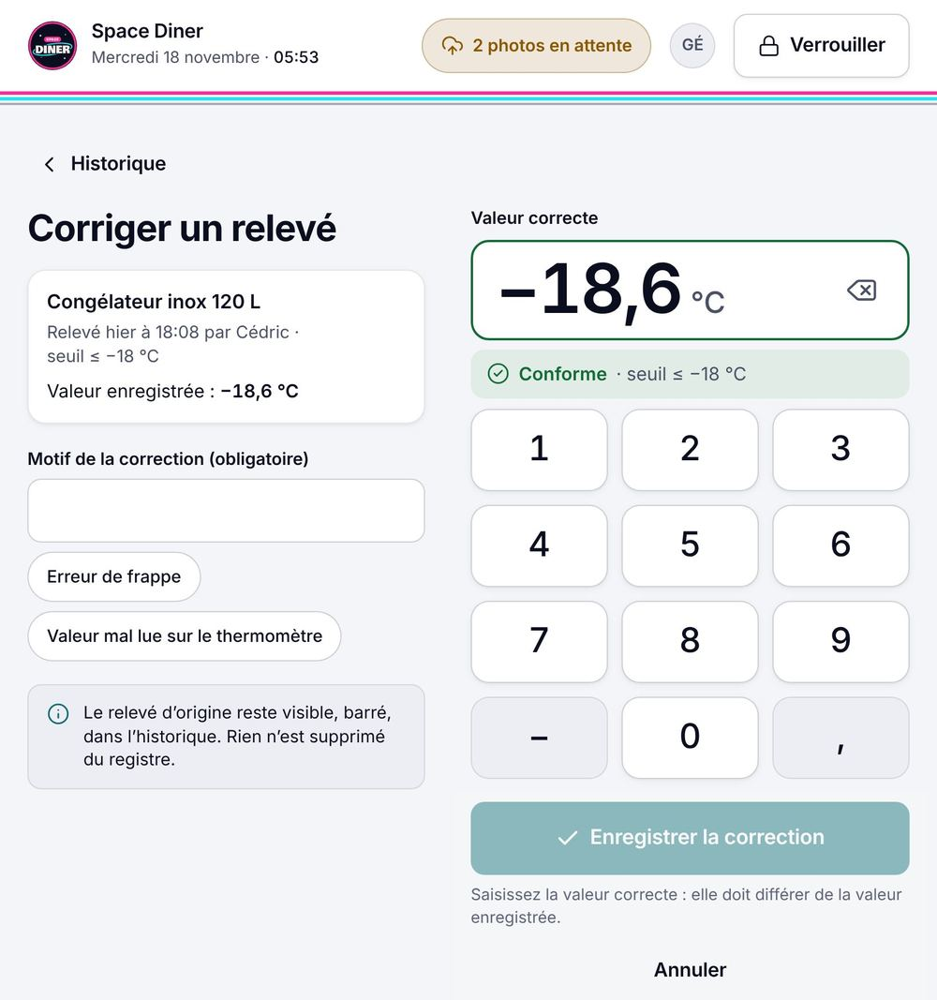
Si vous avez enregistré quelque chose juste pour tester l’application (connecté en gérant) :
La saisie reste dans le registre (rien n’est effacé), mais elle n’apparaît plus dans les écrans ni dans le dossier de contrôle.
À n’utiliser que pour de vrais essais. Une vraie mesure fausse se corrige, elle ne se marque pas comme test.
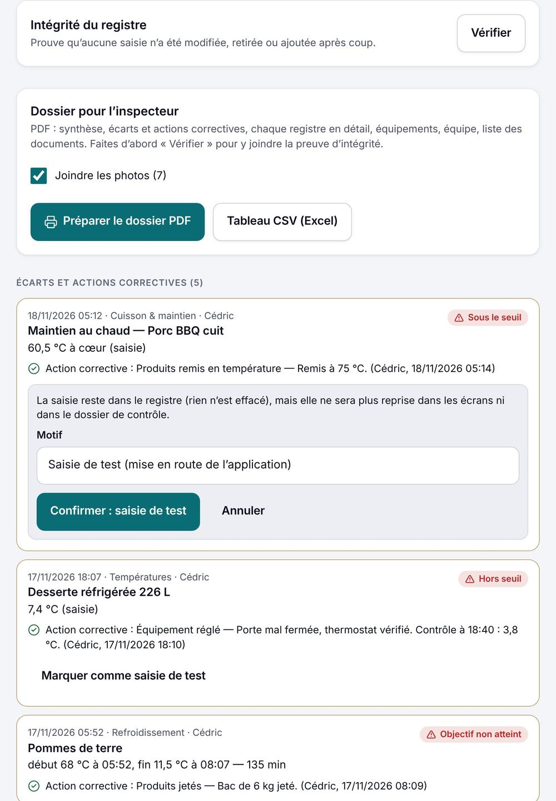
Chaque saisie est d’abord enregistrée sur l’iPad, puis envoyée au serveur dès qu’il y a du réseau. Vous pouvez donc travailler sans Internet : un bandeau « Hors-ligne – vos saisies sont enregistrées sur l’appareil » s’affiche, c’est normal.
La pastille en haut de l’écran indique l’état :
Touchez la pastille puis Synchroniser maintenant pour forcer l’envoi.
Ne supprimez jamais l’application et n’effacez pas les données de Safari tant que des saisies sont « en attente » : elles seraient perdues.
L’outil Test d’enregistrement (en bas de l’accueil) sert seulement à vérifier que tout fonctionne. Ces tests sont exclus du dossier de contrôle.
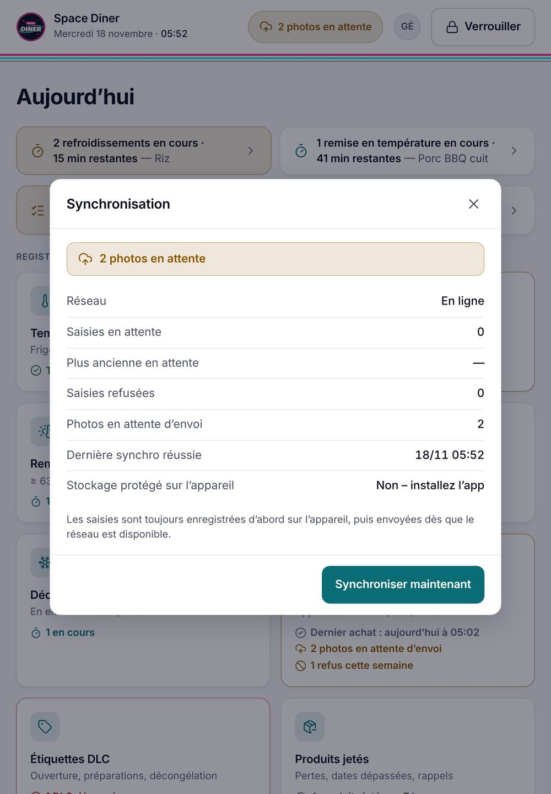
Restez calme : tout est dans l’application. Connecté avec le nom du gérant, ouvrez la tuile Documents & PMS (elle n’apparaît que pour le gérant).
Plus bas, la liste Écarts et actions correctives montre chaque problème et ce qui a été fait.
Onglet Documents : rangez ici (photo ou PDF) le récépissé de déclaration DDPP, l’attestation de formation hygiène, les contrats d’entretien, les fiches techniques… avec Ajouter un document. L’application vous prévient 30 jours avant une échéance.
Onglet Plan (PMS) : un assistant en 5 étapes fabrique le PDF du Plan de Maîtrise Sanitaire avec vos équipements, produits, recettes et règles. Relisez, complétez, puis enregistrez-le.
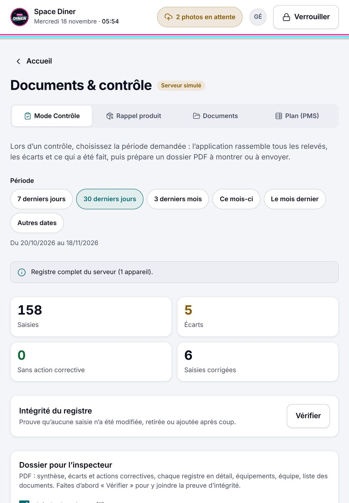
Metro, un fournisseur ou le site RappelConso annonce qu’un produit est rappelé ?
C’est pour cela que la photo de l’étiquette et le n° de lot à l’achat sont utiles.
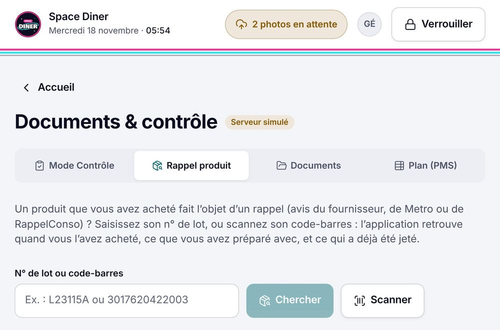
La tuile Gestion (dans Outils) n’apparaît que pour le gérant. Elle demande Internet et, parfois, le mot de passe du compte. On y règle ce qui change rarement :
| Onglet | Pour… |
|---|---|
| Équipements | Ajouter, renommer ou retirer un frigo, un congélateur, une friteuse ; changer ses seuils. |
| Équipe | Ajouter une personne (ex. votre épouse) avec son code à 6 chiffres, changer un code, désactiver quelqu’un. |
| Fournisseurs | Ajouter un magasin ou un fournisseur. |
| Produits | Ajouter un produit acheté : allergènes, traces, conservation, durée après ouverture, température à cœur. |
| Recettes | Préparations maison et plats du menu (les allergènes se calculent seuls). |
| Nettoyage, Checklists | Modifier les tâches et les points des checklists. |
| Réglages | Heures des relevés (16:30 et 21:00), verrouillage automatique, limites des huiles, hauteur des étiquettes. |
Chaque modification demande une confirmation. En cas de doute sur une règle d’hygiène (durée, température), demandez avant de changer : ces valeurs se retrouvent dans votre PMS.
| Chaque jour de service | Tuile | |
|---|---|---|
| ☐ | 16 h 30 : 3 températures (frigo ≤ 3 °C, desserte ≤ 4 °C, congélateur ≤ −18 °C) | Températures |
| ☐ | Étiquette sur tout ce qui est ouvert, préparé ou décongelé | Étiquettes DLC |
| ☐ | DLC dépassée → « Jeté » | Étiquettes DLC |
| ☐ | Viande réchauffée : porc ≥ 63 °C, poulet ≥ 74 °C, en 1 h max | Remise en température |
| ☐ | Huile contrôlée (≤ 25 %) | Huiles de friture |
| ☐ | Checklist Ouverture | Nettoyage |
| ☐ | Nuggets ≥ 74 °C à cœur ; bain-marie ≥ 63 °C (3 h max) | Cuisson & maintien |
| ☐ | 21 h : 3 températures | Températures |
| ☐ | Nettoyages « Fait » | Nettoyage |
| ☐ | Checklist Fermeture | Nettoyage |
Jour des courses
Achats & réception → magasin → Oui/Oui → chaque produit (photo étiquette, vérifier lot + DLC, température, Accepté) → Enregistrer.
Chaque semaine
Checklist Contrôle nuisibles · Nettoyage Frigos et desserte.
Rouge à l’écran ?
Hors seuil → choisir l’action corrective et l’enregistrer. Jamais laisser « Action corrective manquante ».
Erreur ?
Historique → Corriger → motif → bonne valeur. Rien ne s’efface, c’est normal.
| Durées | |
|---|---|
| Sauces maison froides, pommes cannelle | 3 jours (jetées le samedi soir) |
| Crème pâtissière à l’amande | 48 h |
| Pain brioché | 4 jours après achat · 24 h après décongélation |
| Miel piquant | 1 mois |
| Restes du bain-marie | Jetés en fin de service, jamais remis au frigo |